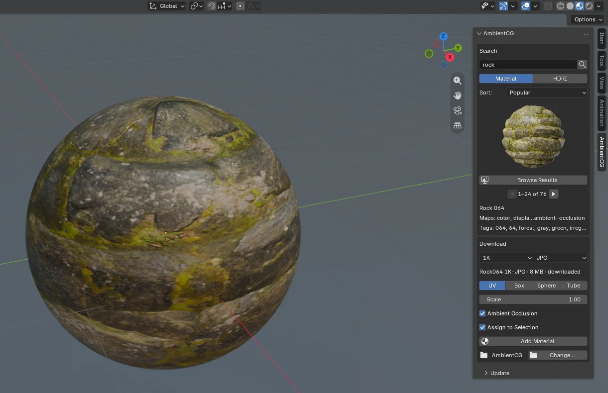
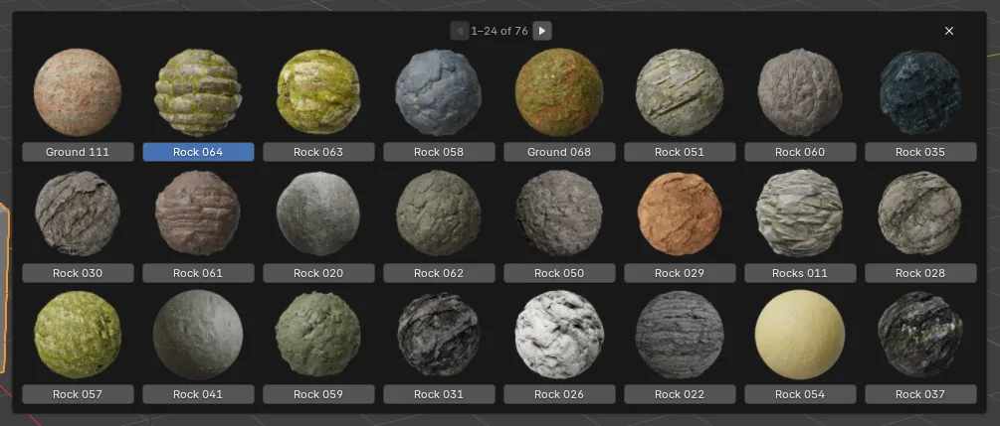

Blender extension
AmbientCG Browser
Search ambientcg.com from Blender's sidebar, pick a result, and add the CC0 material or HDRI to your file. No account, no API key.
Drag onto Blender to installAmbientCG Browser {{version}} · {{size}}Drag this button onto an open Blender window. How it works
Unofficial: not affiliated with or endorsed by ambientCG.

Install
Install it from this repository, either way below, so Blender can update it later.
By drag and drop Quickest
- With Blender open, drag AmbientCG Browser {{version}} (or the big button above) onto the Blender window.
- The first time, Blender says the extension comes from an unknown repository. Click Add Repository…, tick Check for Updates on Startup, then click Create.
- Drag the button onto Blender again and click OK to install. If Blender asks, choose Allow Online Access.
By repository URL
- In Blender open Edit › Preferences › Get Extensions, then Repositories › + › Add Remote Repository.
- Paste this URL, tick Check for Updates on Startup and click Create:
{{repo_url}} - Search for AmbientCG Browser in Get Extensions and click Install.
Do not use Install from Disk
Blender never updates a copy installed from a downloaded zip. If you installed it that way, uninstall it and install it again as above.
Only for a computer without internet access: {{zip_name}} ({{size}}). You will have to update that copy by hand.
Using it
Everything is in one panel: 3D Viewport › Sidebar › AmbientCG.
- In the 3D Viewport press N to open the sidebar and click the AmbientCG tab.
- Type what you are looking for (rock, wood, sky…) and press Enter. Switch between Material and HDRI, and change the sort order.
- Click Browse Results for a window of thumbnails. The arrows turn the page; a click on a name picks that result.
- Choose the resolution, 1K to 16K, and JPG or PNG. The download size shows before you click.
- Add Material downloads the maps once, builds the material (color, roughness, normal, height, ambient occlusion, metal, opacity, emission) and puts it on the selected objects, by UV map or by Box, Sphere or Tube projection.
- Set World HDRI makes an HDRI the scene's world, with Strength and Rotation sliders. The world you had stays in the file.

Cache folder
Downloads, thumbnails and saved searches go to the system temp folder until you pick your own: Pick Folder… at the bottom of the panel, or Preferences › Add-ons › AmbientCG Browser.
Your .blend links to the image files in that folder, it does not embed them, and the system may clear the temp folder. Pick a permanent folder before real work.
Offline
What you downloaded keeps working with online access off: an asset is fetched once per resolution, then read from the cache folder.
Searches are remembered for a day and stay available offline for 30 days, thumbnails included. The search button always asks ambientCG for fresh results.
Updating
With Check for Updates on Startup ticked, Blender offers new versions in Get Extensions.
Or press Check for Updates in the panel's Update section or in the add-on preferences: a newer version is installed right away.
Troubleshooting
Still stuck? Open an issue with your Blender version and the text of the system console.
Blender says the extension comes from an unknown repository
That is the first drop doing its job. Click Add Repository…, tick Check for Updates on Startup, click Create, then drag the button onto Blender once more to install.
“Online access is off”
Blender blocks add-ons from the internet until you allow it: Edit › Preferences › System › Network › Allow Online Access. Assets you already downloaded work without it.
There is no AmbientCG tab
Press N with the pointer over the 3D Viewport to open the sidebar. If the tab is still missing, check that AmbientCG Browser is ticked in Preferences › Add-ons.
“This copy was installed from disk, so Blender cannot update it”
Uninstall it in Preferences › Add-ons, then install it from this page. Your downloads stay where they are; pick the cache folder again afterwards.
A material turned pink, or its textures are missing
Its image files are gone: the temp folder was cleared, or the cache folder moved. Pick the asset again and click Add Material: it downloads again and repairs the same material. Then pick a permanent cache folder.
“AmbientCG cannot be reached” or a download fails
ambientcg.com may be down for a moment, or a firewall blocks Blender. Saved searches still show meanwhile. The reason is printed in the system console (on Windows: Window › Toggle System Console).
About
A small, free tool by one Blender user for others.
Unofficial
AmbientCG Browser is an independent project. It is not affiliated with, endorsed by or supported by ambientCG; it only uses the site's public API.
The assets are CC0
Everything on ambientCG is released under Creative Commons CC0: free for any use, no attribution required. The site runs on donations, so consider supporting it on Patreon or Ko-fi.
Privacy
The add-on talks only to ambientcg.com and its file servers (searches, thumbnails, downloads) and to this site (the update check). No telemetry, no account, no API key.
Open source
Free software under the GNU General Public License, either version 3 of the License, or (at your option) any later version; its text comes inside the download. Source, changelog and releases are on GitHub; bugs and ideas go to the issue tracker.